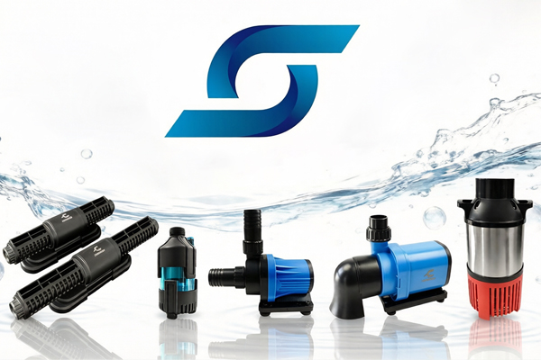
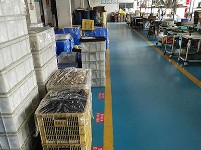
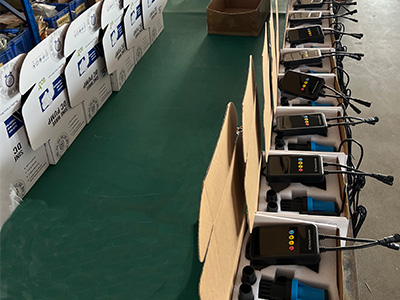
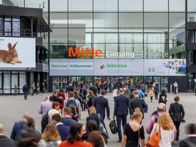

About AquaFlow
CHANCS Company specialized in micro AC/DC motor manufacturing for more than 10 years, and that is why we can manufacture more quite ,durable and efficient DC Water Pump and Wave Pump. which mainly used in salt/freshwater aquarium, aquaculture, fish pond and garden equipment.
By relying on standardized operation, modern production equipment, sophisticated testing equipment, and first-class R&D team, we commit to making high performance, more durable and energy saving pump. That is our persistent mission. We will keep on improving and developing new product to catch customer's need.
All of our products strict accord with the varous industry standard production and management, and certificated with CE,ROSH, TUV, FCC, and some products certificated with UL,PSE. We welcome inquiries from wholesales, agents and distributors to develop a profitable friendship.

Innovation
Constantly improving pump efficiency and integrating IoT.
Quality
ISO‑certified manufacturing with strict quality control.
Sustainability
Developing solar and energy‑saving solutions.
Our History

2009Founded as a small workshop, specializing in the production of synchronous motors.
Established the formal company and obtained import and export rights, starting international trade business.

2020Developed and produced our first series of water pumps, marking entry into the aquarium industry.

2026Participated in Interzoo 2026 in Nürnberg, Germany to promote products to the European market.
Welcome OEM and ODM project. Welcome people from all walks of life to come to discuss cooperation!
The products sell well both at home and abroad, and are deeply trusted and supported by customers. We have the principle of "quality for survival and continuous innovation". Warmly welcome people from all walks of life to come to discuss cooperation and create a future together.
We also accept OEM/ODM projects to meet different customers’ requirement. and we too.
We are professional manufacturer in development and production for aquarium and garden Equipment and Accessories. Our Main Product Covers Aquarium Light, Wave Maker, DC Water Pump(ECO), AC Water Pump(ECO), Submersible Fountain Pump, Hang On Filter, Mist Maker, Industrial pump etc.
We sincerely expect to create a better future with friends all over the world.